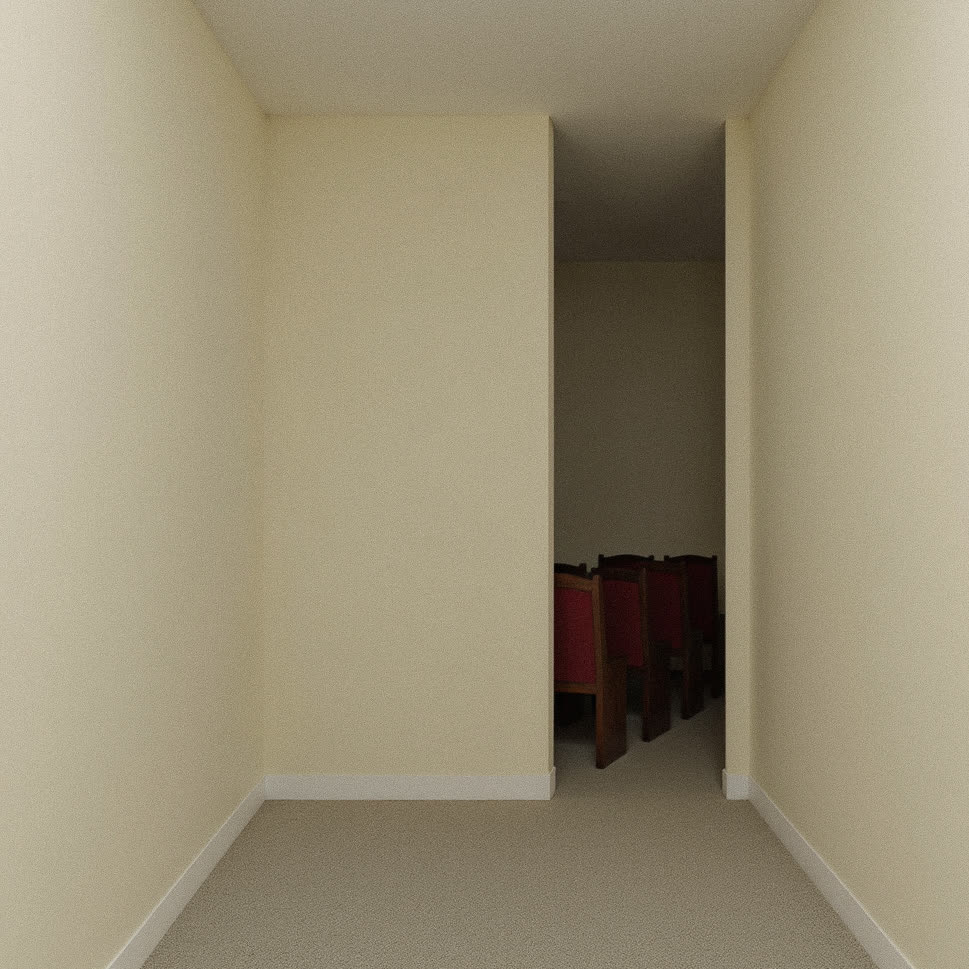
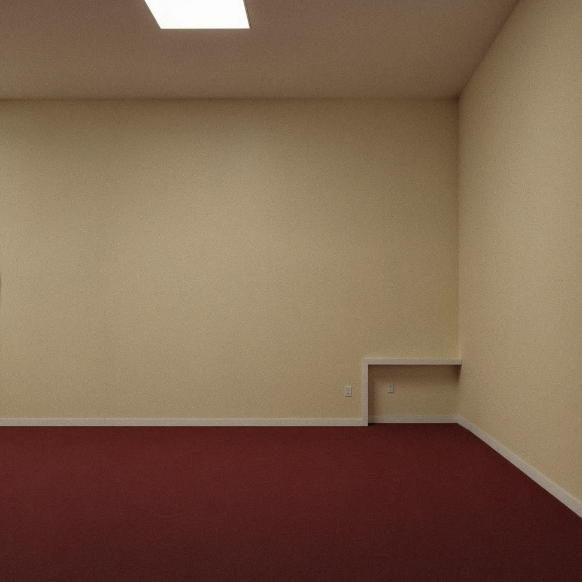
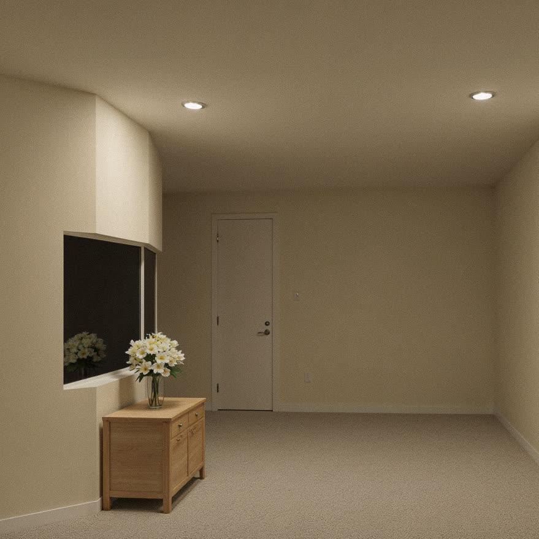
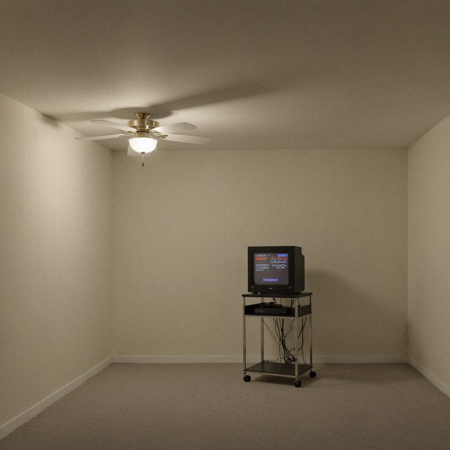
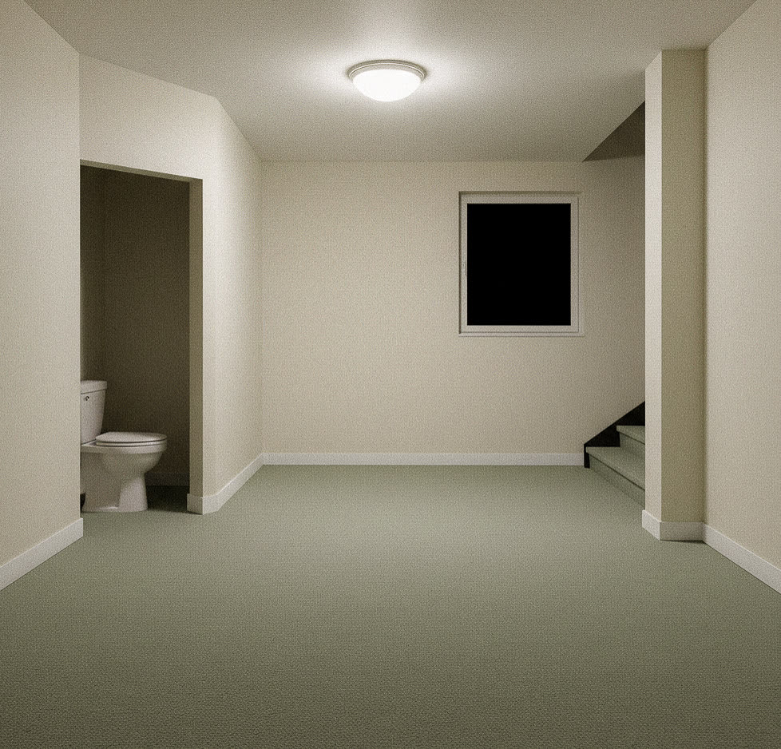
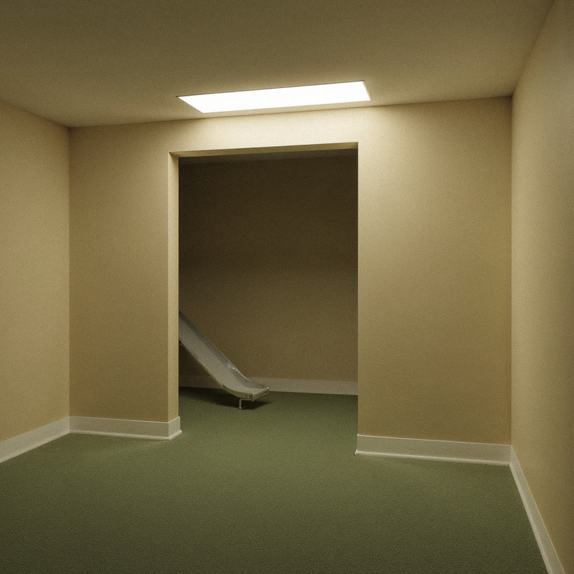
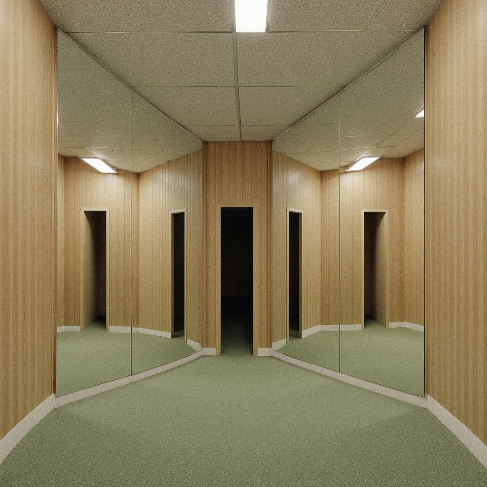
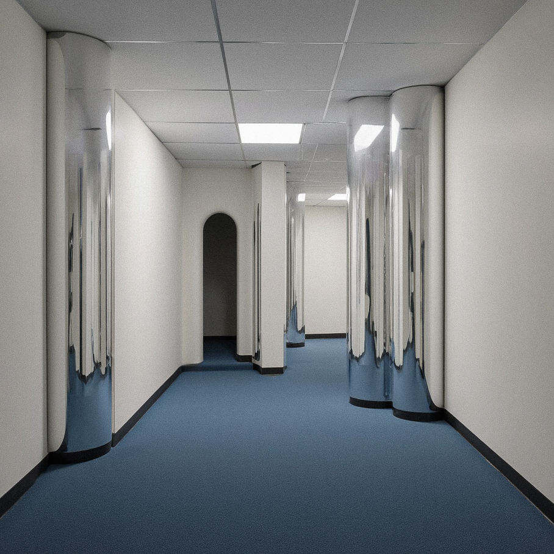
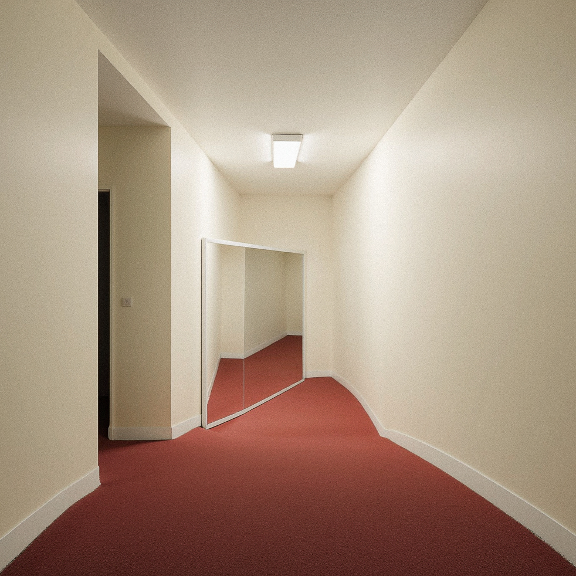
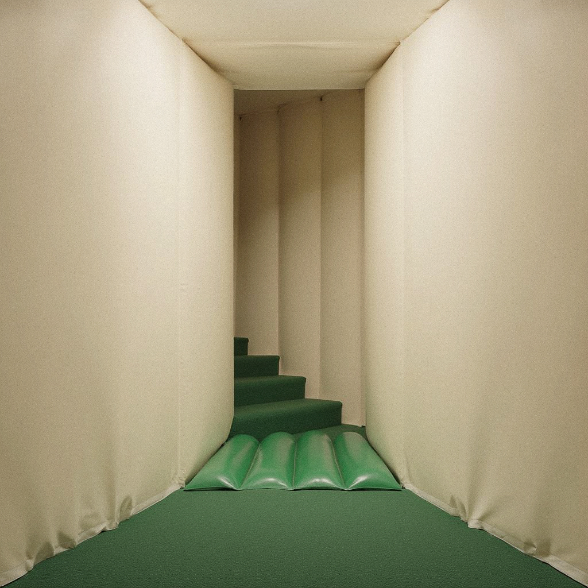

Experiment · Space Studies
Empty interiors as containers for memory and ritual
A series of generated interiors stripped of inhabitants — chapels, clubhouses, console rooms, stairwells. Every space is built to hold something: worship, exercise, attention, transit. Without the figure inside, the room itself becomes the subject: its proportions, its lighting, the residue of intended use.
Each image is a study in absence. The chair pulled out. The light left on. The interior posed for a witness who never arrives.










Generative imaging · 2026
A room is a held breath. Architecture waiting for a body to make it true.
Prompt-driven generation paired with hand-edited compositions. Each space was tuned for stillness — wide angles, available light, deep rule-of-thirds framing. The goal was to make the viewer feel like they had walked in seconds too early or decades too late.